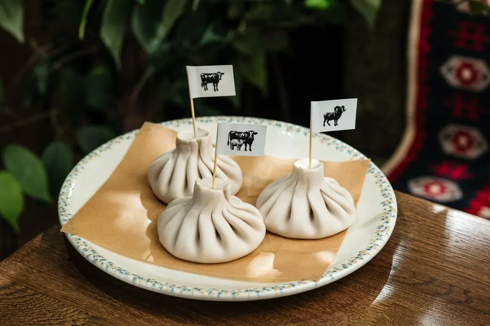
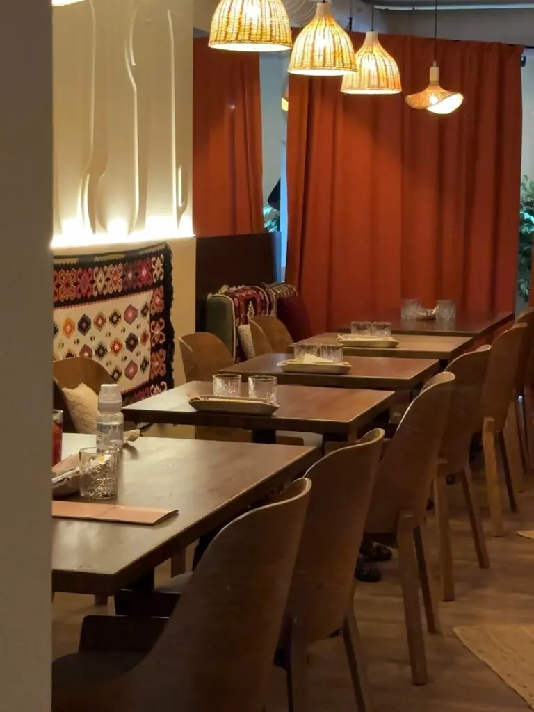
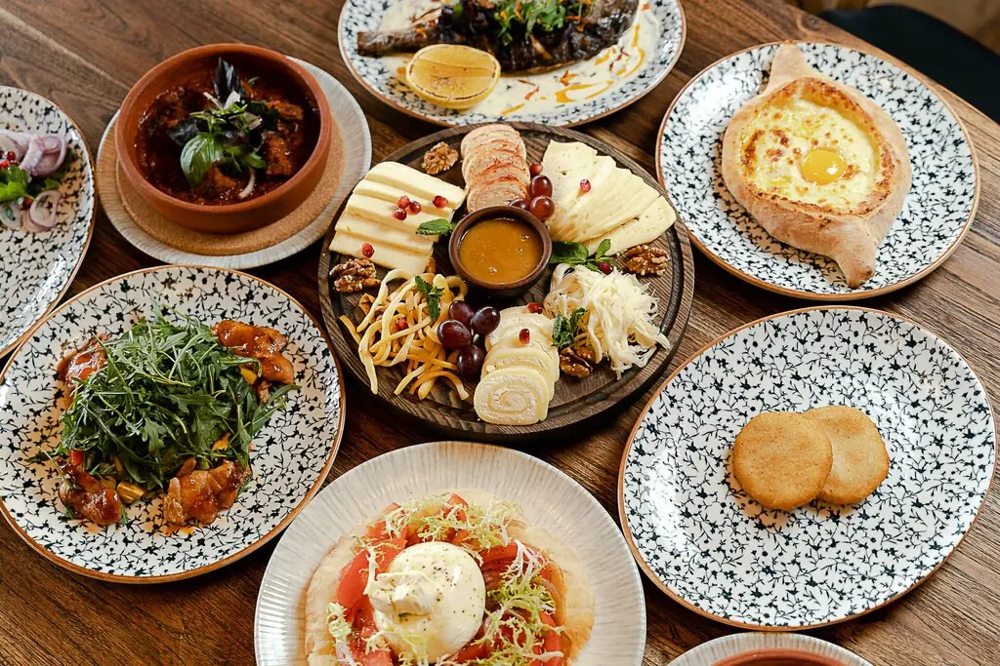
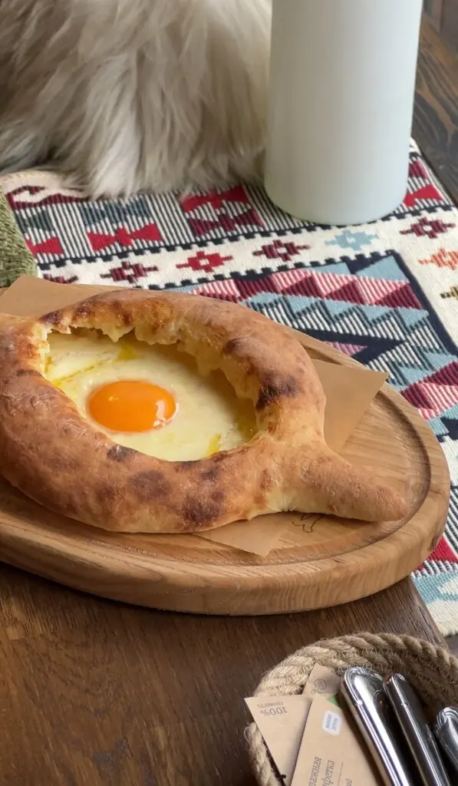
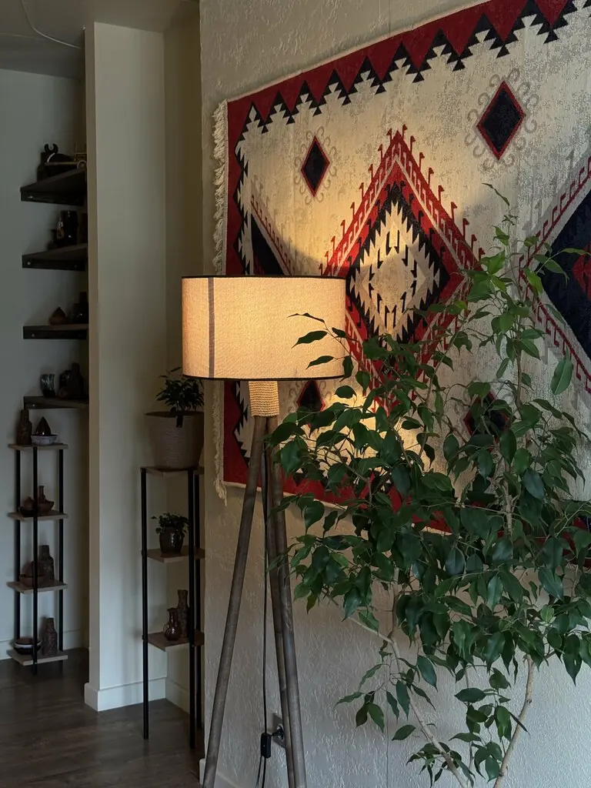

Воронеж+7 915 580-44-44
Гулиани
На хинкали здесь ставят маленькие флажки. Ставьте и вы: отмечайте, что хотите съесть, а мы положим список в заявку.
4,7 · 91 оценка

Поставьте флажки
Пока без флажков
Часть меню с Яндекс Карт, цены уточняйте у официанта. Флажки только подсказка для ресторана, а не оплата.
Дом с орнаментом
Зал на 32 места, рыжие шторы, зелень и завтраки.




Гости голосуют
На мой скромный взгляд, одно из лучших заведений в Воронеже грузинской кухни!Tatiana
Какое шикарное заведение, были тут впервые и в полном восторге! Очень красивый интерьер.Юлия Баранова
Всё круто, клёво, классно, восхитительно, прекрасно. Еда и сервис на достойном уровне.Артём Артемонов
Флаг вам в руки
Воронеж, квартал Троицкий, жилой массив Олимпийский, 5Пн–пт 12:00–22:00, сб 11:00–23:00, вс 11:00–22:00+7 915 580-44-44